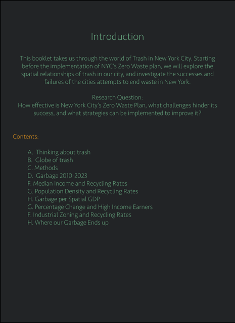
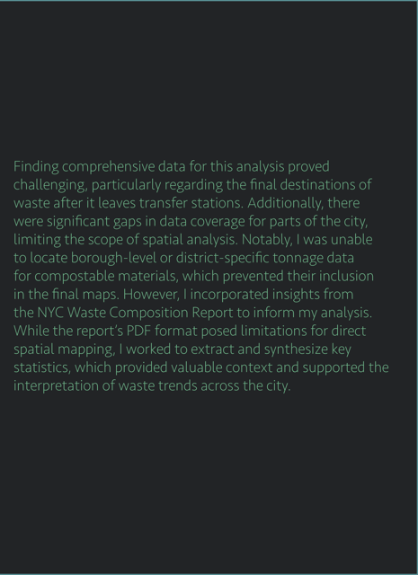
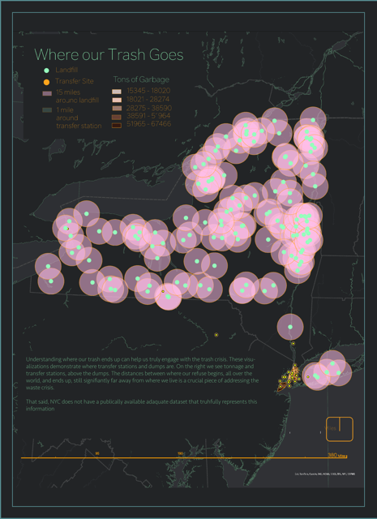
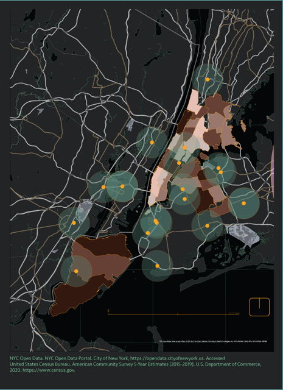

Zero Waste Report











This project explores the environmental, social, and economic impacts of waste mismanagement in urban areas. By combining Geographic Information Systems (GIS) and data analysis, we identified key patterns in waste disposal, highlighted the effects on vulnerable ecosystems and communities, and proposed actionable solutions for policymakers.
The methodology focused on three core components: